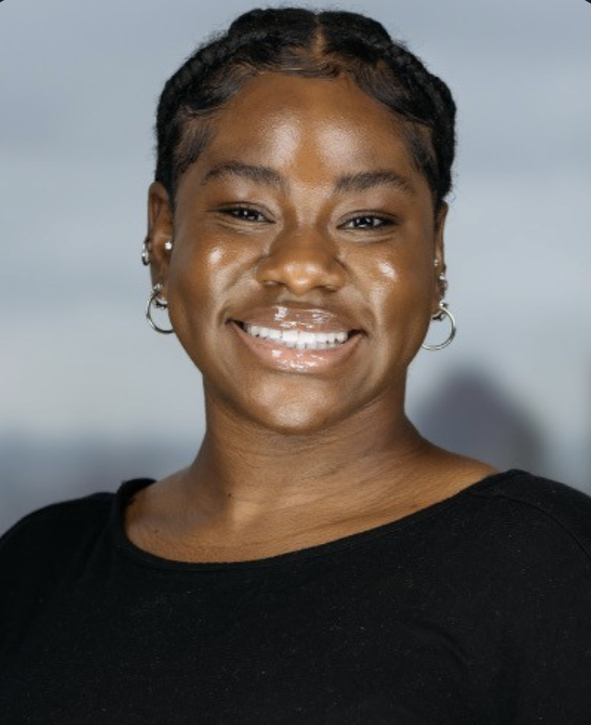

What draws me most to journalism is the chance to capture real experiences with depth and intention. Im interested in stories that reflect culture, identity, and the nuances of everyday life——stories that migth otherwise go unnoticed. I value taking the time to listen, earn trust, and represent people in a way that feels accurate and respectful. In the long term, I want to build a carer where I can produce thoughtful, impactful work—— whether that is within a media organization or through a platform of my own.
Lately, I’ve also been exploring podcasting and how voices and conversations can bring stories to life in a different way. There’s something really special about hearing someone’s perspective and turning that into something others can connect with. I enjoy playing around with ideas and thinking about how they could be shared, whether it’s through writing or audio. When I’m not doing that, you’ll probably find me out on a walk, just observing the world around me. I like noticing little details—people, places, random moments—that often end up inspiring what I write or think about later. Overall, I’m just someone who’s curious, creative, and always looking for new ways to tell a good story.